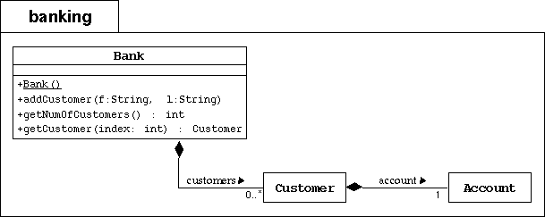

Step4: Banking project-Use Arrays to Represent Associations
Objective
In this lab you will use arrays to implement the multiplicity on the
association between a bank and its customers.

Directions
To the banking package, you will add the Bank class as
modeled by the UML diagram above. A bank object simply keeps track of an
association between itself and its customers. We will implement this
aggregate association with an array of Customer objects. We will
also need to keep a integer attribute that keeps track of how many customers
currently exist in the bank.
- Create the banking directory. Copy the previous Banking project
files in this package directory.
- Add two attributes to the Bank class: customers
(an array of Customer objects) and numberOfCustomers
(an integer that keeps track of the next customers array index).
- Add a public constructor that initializes the customers array
with some appropriate maximum size (at least bigger than 5).
- Add the addCustomer method. This method must construct a new
Customer object from the parameters (first name, last name)
and place it on the customers array. It
must also increment the numberOfCustomers attribute.
- Add the getNumOfCustomers accessor method, which returns
the numberOfCustomers attribute.
- Add the getCustomer method. This method returns the customer
associated with the given index parameter.
Testing
Compile and run the TestBanking program.
You shoud see the following output:
Customer [1] is Simms, Jane
Customer [2] is Bryant, Owen
Customer [3] is Soley, Tim
Customer [4] is Soley, Maria